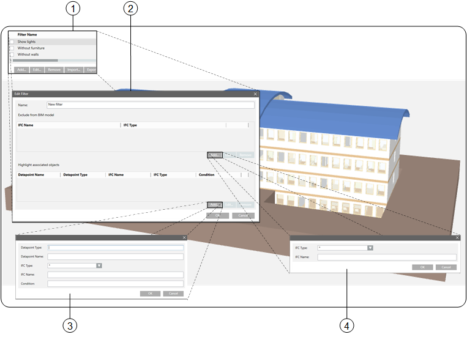

Object Filter
Filters  limit the view to an object or object group. Objects can also be associated with a data point. Associated objects are highlighted in color (
limit the view to an object or object group. Objects can also be associated with a data point. Associated objects are highlighted in color (  or
or  ).
).
When designing individual filters take note of what is also hidden by the filter. This may occur using an individual filter (device filter includes walls doors, and furniture) or feature a combination of multiple filters (walls + doors + furniture). It is easy to design by identifying the BIM object classes in use and the true table; it can be discussed with the customer and approved.
In addition, it is recommended to select a naming convention that emphasizes the function of the applicable filter, for example A_ for hide, , HL_ for highlight, C_ for combination so that the filters would be named A_walls, A_chairs or HL_walls, HL_chairs or C_A_walls_chairs (hide walls AND chairs). This simplifies selection, since the filter is sorted alphabetically by default.

Filter overview | ||
| Dialog box | Description |
1 | Filter Name | Displays individual hidden, highlighted, or combined project filters. Objects can be hidden or highlighted by selecting/clearing the check boxes. The list is displayed alphabetically. |
2 | Edit filter | Displays all detailed information on a defined filter for hidden or highlighted objects. |
3 | Highlighted objects | Defines the objects highlighted in color when the filter is applied. |
4 | Hidden objects | Defines the IFC objects hidden when the filter is applied. |
Filter Name (1) | ||
Button | Description | |
Add | Opens the Edit filter dialog box. A new filter is created. | |
Edit | Opens the Edit filter dialog box. An existing filter can be edited. | |
Remove | Deletes a filter. | |
Import | Imports a filter configuration. They can be derived from the same project or from a national norm. | |
Export | Exports all defined filters saved as a backup file (individual filters cannot be selected). Default filters can be reused on another project. | |
Edit filter (2) | ||
Section | Description | |
Name | Defines the filter name. Displayed alphabetically in the Filter name dialog box. | |
Exempted from BIM model | Displays the created IFC filter. The filter can apply to an individual object (Wall-010) or to an entire object class (*). The created filters act as AND filters. | |
Display associated objects | Displays the filters associated with a data point. | |
Highlighted objects (3) | ||
Field | Description | |
Object model | Entry of the applied object model | |
Data point name | Entry of the last part of the data point name. | |
IFC type | Displays all available IFC model types (e.g. furniture). Different object types (e.g. Tables, chairs) can be managed within an IFC model type. | |
IFC name | Entry of a specific object type (e.g. only one table in a room) or a selection of all types with (*). | |
Condition | Value entry with condition < = or > permits additional filtering of the objects. The syntax is not checked. | |
Hidden objects (4) | ||
Field | Description | |
IFC type | Displays all available IFC model types (e.g. furniture). Different object types (e.g. Tables, chairs) can be managed within an IFC model type. | |
IFC name | Entry of a specific object type (e.g. only one table in a room) or a selection of all types with (*). | |